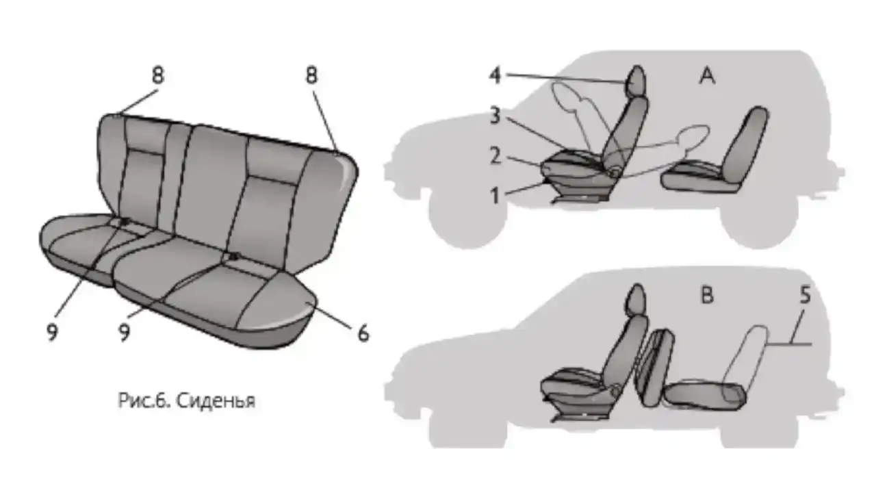
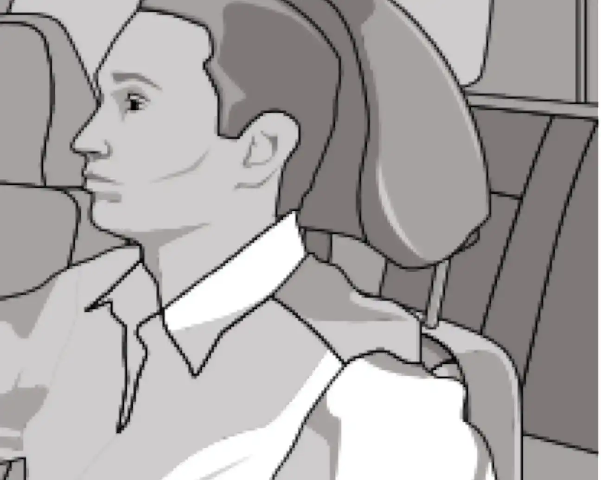

Сиденья
Передние сиденья. Для регулировки передних сидений в продольном направлении потяните блокирующий рычаг вверх. После установки сиденья в удобное положение опустите рычаг и, небольшим смещением сиденья вперёд-назад, добейтесь его надёжной фиксации.

Наклон спинки сиденья регулируется бесступенчато вращением рукоятки.
Подголовники регулируются по высоте и по наклону. Оптимальное положение подголовника — когда его верхняя кромка находится на одном уровне с верхней частью головы. Для людей очень высокого роста необходимо поднять подголовник в крайнее верхнее положение, а для людей очень низкого роста — опустить в крайнее нижнее положение.

Задние сиденья. Для увеличения площади багажного отделения предусмотрена возможность раскладки заднего сиденья, причём каждая его часть при необходимости может быть разложена отдельно. Раскладку заднего сиденья проводят в следующей последовательности: снимите полку, потяните за петлю и установите подушку в вертикальное положение, потяните за петлю и, освободив спинку, уложите её.
По окончании погрузки разместите полку в багажном отсеке так, чтобы не ограничивался обзор через заднее стекло.
Запрещается регулировать положение водительского сиденья во время движения автомобиля. Сиденье может резко сдвинуться с места, что приведёт к потере контроля над автомобилем.